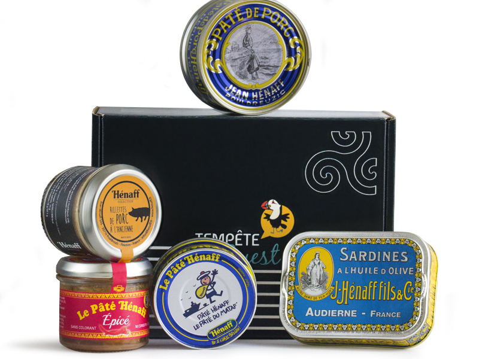

" Le Pâté Hénaff le Pâté du Mataf "
Découvrez l'incroyable histoire de la plus grande fierté Bretonne et du plus grand pâté jamais créer
Le Pâté Hénaff
Avec en plus, quelques anecdotes et des recettes des plus exquis de quoi émerveillés un peu plus votre amour pour cette boite si emblématique !
Le Site OfficielD'où vient ce fameux pâté ?
Le pâté Hénaff, fait partie des icônes bigoudènes depuis plus d’un siècle. Produit à Pouldreuzic dans l’usine fondée en 1907 par Jean Hénaff, cette boîte de pâté de porc s’est affirmée graphiquement dès 1935 : un code couleur bleu et jaune incontournable, un lettrage de l’époque dont la patte gauche du H se transforme en J, du prénom de son créateur.
Au Guilvinec il était coutume de dire : « Le pâté Hénaff, le pâté du mataf ».

Le Créateur du pâté Divin
Jean Hénaff, né le 30 janvier 1859 à Pouldreuzic et mort le 26 novembre 1942 dans la même commune, est un agriculteur et industriel breton, fondateur de la société Jean Hénaff. Produisant au départ des boîtes de conserve de légumes, l'idée de mettre dans les boîtes du pâté de porc est un succès. Avec l'élaboration d'une recette de qualité, intégrant toutes les parties du cochon, le pâté Hénaff est devenu le leader du marché des conserves de pâtés en France et la renommée de la maison familiale s'est exporté à l'internationale.
Le plus grand Classique de tout les pâtés
Et s’il n’en reste qu’un, ce serait celui-là : le classique des classiques, l’emblème de la maison, la star des pâtés en conserve, l’incontournable Pâté Hénaff. Intangible qualité. Rares sont les produits à pouvoir s’enorgueillir de ne pas avoir changé leur recette d’un iota en un siècle. Le Pâté Hénaff est de cette trempe-là : depuis sa création en 1915 par Jean Hénaff, il réunit toujours les meilleurs morceaux du porc – filets et jambons – pour offrir aux gourmets plus de saveurs et moins de gras.
Le Pâté Hénaff, le pâté de l'espace
Le Grand Concours !
Participez à notre jeu concours et tentez de gagner notre incroyable coffret spéciale Hénaff avec des tas de lots !
Participez au ConcoursNos Plus Grands Pâtés
Découvrez les pâtés les plus mythiques de la marque et leurs ingrédients secrets qui les rendent si délicieux !
Découvrir ces PâtésPouuuuuuuldreuzic !
Pouldreuzic le lieu de tout les désirs, partie d'une simple idée, c'est dans ce lieu unique où est née le plus grand des pâtés.
Pouuuuuuldreuzic !